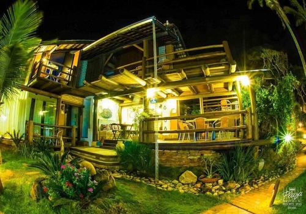

Hotel Pousada Canto da Vigia
★★★★★
Informações Gerais
📍R. Waldemar Werner, 771 - Armação, Penha - SC
📞Telefone: (47) 3224-1846
🕒Horário de funcionamento: A Pousada Canto da Vigia, em Penha (SC), possui recepção 24 horas e oferece serviços e instalações disponíveis em qualquer horário. O check-in pode ser feito a partir das 15h e o check-out até as 12h.